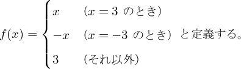
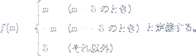

|
|
En toi Pythmeni tes TeXnopoleos
［電脳世界の奥底にて］ |
PXtosb パッケージ
- 2012/05/19： pxtosb-extra の書庫形式を lzma から xz に変更。
概要
pTeX の和文フォントを Unicode サブフォントに分解する為の一連の VF およびそれを利用する為の dvi2dvi の fontdesc ファイルをまとめたものである。 サブフォント分解を行うことで pTeX の和文 TFM に未対応の DVI ウェアが設定次第で pTeX(upTeX) の横書き DVI を扱えるようになる。 このパッケージでは dvipng を使うための設定も含んでいる。
対応環境
このパッケージ中の VF を使って pTeX の DVI を変換する為には dvi2dvi が必要である。 また、変換した DVI に対して dvipng を使うには ttf2pk が必要になる。
W32TeX (角藤版 TeX) の場合、それぞれ次のアーカイブに含まれる。
- dvi2dvi: jtex-2.1-w32.tar.bz2
- ttf2pk: ttf2pk-w32.tar.bz2
- dvipng: dvitools-w32.tar.bz2
ダウンロード
pxtosb.zip に含まれる VF は pTeX 標準の和文フォント（rml, gbm） に対応するもののみである。 UTF／OTF パッケージや upTeX のフォントに対応するものは pxtosb-extra の方に含まれている。 このファイルはサイズを特に小さくする為に xz 圧縮を用いた （アーカイブのサイズは 235KB だが展開すると 37MB になる）。 W32TeX の環境でこれを展開するには、texinst###.zip 内の実行ファイルをちゃんと実行パスに入れているならば、
tar xJf pxtosb-extra.tar.xz
とすればよい。
インストール方法については、 パッケージ付属の説明書（README）を参照してほしい。
サンプル
基本的な使用法
dvipng に適した DVI を作るための LaTeX 文書の作成法は、 和文が可能なことを除いて、普通に dvipng を用いる時と同じである。 例として、Web ページ用に数式の画像を作ることを考える。 例えば、次のファイル eq01a.tex を作る。
\documentclass{jsarticle}
\usepackage{amsmath,amssymb}
\pagestyle{empty}
\begin{document}
$f(x) = \begin{cases}
x & \text{（$x=3$ のとき）}\\
-x & \text{（$x=-3$ のとき）}\\
3 & \text{（それ以外）}
\end{cases}$
と定義する。
\end{document}
ここから次のようにして PNG 画像が作れる。
platex eq01a dvi2dvi -F pxtosb eq01a.dvi > eq01n.dvi dvipng -D 150 -T tight eq01n.dvi

dvi2dvi により、和文フォントを参照する DVI である eq01a.dvi を欧文と同じ構造のフォントしか含まない eq01n.dvi に変換している。 この DVI であれば dvipng に通せるということである。 dvipng のオプション “-D 150” は解像度設定、 “-T tight” は 文字のある部分だけを切り出した画像を作るという意味である。 1 ページ毎に 1 つの画像となるので、出力ファイル名は 既定では後ろに番号がついた形 （この場合は eq01n1.png）になる。 詳しくは dvipng のマニュアルを参照すること。
透過画像を作る
dvipng の使い方自体は欧文の時と何も変わらないので、 これ以上説明することはないのであるが、 もう少し例をあげておく。
-fg で前景色、-bg で背景色を指定する。 背景色を transparent にすると、単純な透過色を用いた透過画像になる。 この場合、アンチエイリアスの部分は完全非透過になるので、 「想定される背景色」を一度 -bg で指定する必要がある。 （何か変な指定方法だが、こうしないと上手くいかない。） ここでは、このページの背景色（#001133）と同じにしている。 想定と大きく異なる背景色に乗せると、 アンチエイリアスの部分が変な色に見えるので、 透過画像としては不完全である。
dvipng -D 150 -T tight --gamma 2 -fg "gray 1" -bg "rgb 0 0.067 0.2" -bg transparent -o eq01-tr1.png eq01n.dvi (実際は一行で入力)

これに対して、 -bg に Transparent （先頭大文字）を指定すると、 アルファチャネルを用いた透過画像になる。 これはどんな背景に対しても正しい表示になる。 ただし、Internet Explorer ではアルファチャネル透過画像は バージョン 7 （タブブラウズをサポートした版） 以降でのみ対応しているので注意が必要である。 正しく表示されていれば、上と同じように見えるはずである。
dvipng -D 150 -T tight --gamma 2 -fg "gray 1" -bg Transparent -o eq01-tr2.png eq01n.dvi (実際は一行で入力)